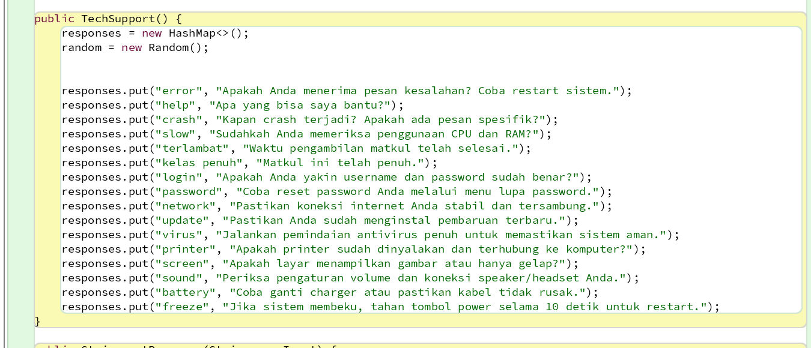
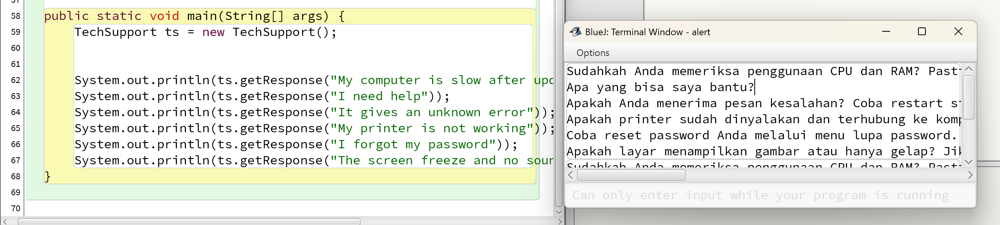

Kali ini saya diberikan tugas oleh pak fajar untuk membuat kode untuk menjawab otomatis atau techsuppor dengan menggunakan bahasa Java.
pertama-tama saya membuat kode nya di bluej terlebih dahulu dengan menambahkan 10 response put.
di tugas kali ini saya hanya membuat dengan 1 class.
berikut merupakan bagian output dari kode saya. dibagian get response pada kode saya itu bisa diibaratkan sebagai input jika kata dari kalimat yang ada di get response tersebut ada yang sama dengan kalimat kunci pada hash map maka akan keluar bagian nilai atau jawabnya
berikut ini merupakan link kode saya: